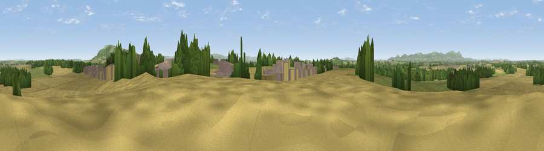

Brockeridge Common
#15613 in England · top 41% of its area beats it · near TwyningThe view, rendered

A 360° render of this exact spot computed from the terrain model, tree cover and land cover — summer colours, afternoon light, calibrated against photographs of famous viewpoints. Real trees, hedges and buildings will differ in detail.
The panorama
Grey silhouette: terrain skyline in each direction (720 bearings, Earth curvature and refraction included). Dashed green: skyline with trees (+15 m) and buildings (+8 m) as obstacles. Blue strip: how far the ground is visible on each bearing.
Where the view opens
Wedge length = distance to the farthest visible ground on that bearing (vegetation-aware). Rings at 10, 25 and 50 km.
What fills the view
50% cropland · 31% grassland · 17% woodland · 2% built-up
Angular shares of the visible panorama (visual magnitude), not map area. Landscape diversity 0.49 (0–1 Shannon).
Key numbers
More beautiful places nearby
The staircase of upgrades: each row has a higher view potential than everything closer. Driving times are estimates from straight-line distance, calibrated against real road routing — check an actual route before setting out.
| Place | Direction | Drive | Score |
|---|---|---|---|
| Windmill Tump | SW · 4 km | ~10 min | 58.7 |
| Viewpoint near Bredon's Norton | ENE · 5 km | ~12 min | 81.3 |
| Bredon Hill | ENE · 7 km | ~14 min | 83.0 |
| Black Hill | WNW · 13 km | ~24 min | 83.1 |
| Pinnacle Hill | WNW · 13 km | ~24 min | 85.7 |
| Millennium Hill | W · 14 km | ~25 min | 86.9 |
| Worcestershire Beacon | WNW · 14 km | ~26 min | 87.1 |
| Viewpoint near West Quantoxhead | SW · 123 km | ~147 min | 87.9 |
52.04068, -2.15483 · source: dobih hill · position refined by local search. Computed location — check access rights before visiting.